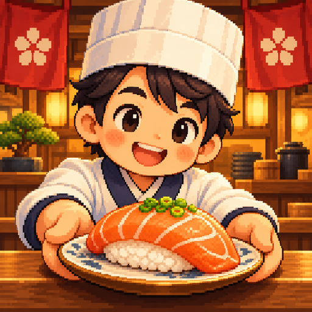
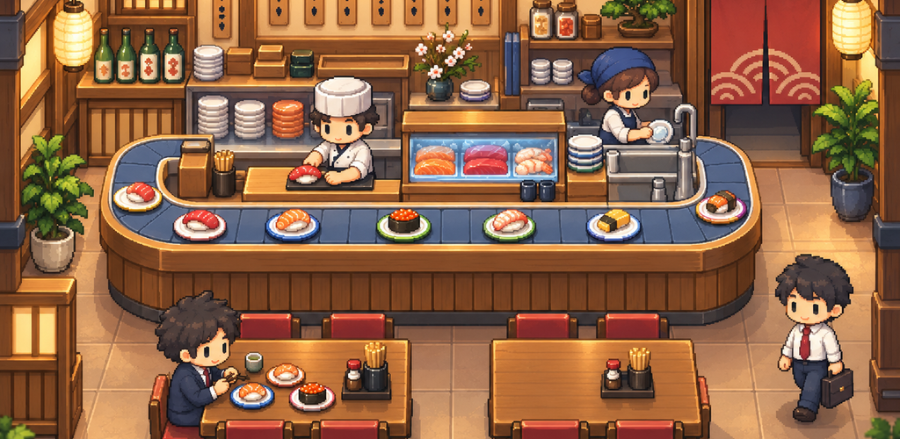

Every little corner, just right.
Let's find a place for everything: the tables, the sushi stations, and our trusty conveyor belt. We'll arrange things just the way we like them, making room for all the little things that bring our shop to life.

Cozy Sushiby tupitupiGood food. Warm hearts.
Every little shop starts somewhere. Let's roll up our sleeves, make some sushi, gather a lovely team, and turn this little corner into a place of our own.
Come build with usComing to Android

The game
From our very first counter to a bustling little sushi spot, we'll build this place at our own pace. A little care here, a little improvement there — and before long, it'll feel like home.
Let's find a place for everything: the tables, the sushi stations, and our trusty conveyor belt. We'll arrange things just the way we like them, making room for all the little things that bring our shop to life.
A good kitchen takes a good team. Let's find our people, pick the dishes our guests love, and discover our own happy rhythm. One service at a time, we'll learn to roll with it.
There's a new recipe to master, another guest to get to know, and another little idea to try. Let's keep experimenting, find new favorites, and watch our humble shop grow.
Every little shop has a story. This one's ours, and we're just getting started.
Cozy Sushi is rolling onto Android soon.
Questions, kind words, or sushi recommendations? We'd love to hear from you.
tupitupigames@gmail.com